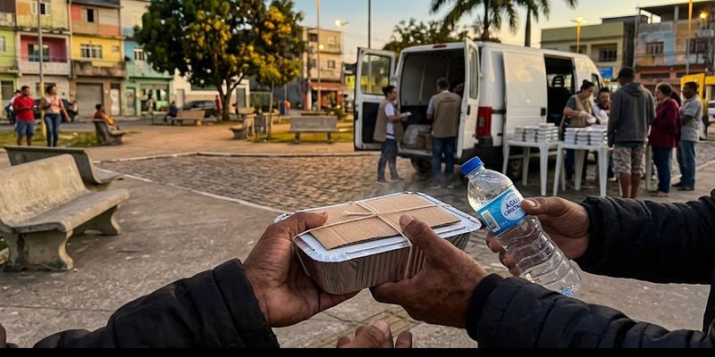

O BemVida+ é uma plataforma que conecta pessoas que querem doar a ONGs e associações que precisam de itens físicos, como alimentos, roupas e produtos de higiene.
O projeto nasceu na Fatec Ferraz de Vasconcelos, com a ideia de reunir em um só lugar as campanhas de bairro e tornar mais simples o caminho entre quem doa e quem recebe.

NOSSA HISTÓRIAAproximar doadores e instituições, centralizar campanhas de itens físicos e tornar o acompanhamento das contribuições mais organizado e transparente.
A instituição, depois de validada, publica quais itens precisa e em que quantidade.
Você escolhe a campanha, informa o que vai doar e combina a entrega com a ONG.
Quando os itens chegam, a ONG confirma e o progresso da campanha é atualizado.
Não há pagamentos, PIX, cartão ou boleto na plataforma, e ela também não cuida da entrega: a combinação fica entre doador e ONG. Toda ONG passa por validação da administração antes de publicar campanhas.
Projeto Integrador II, curso de Análise e Desenvolvimento de Sistemas, Fatec Ferraz de Vasconcelos, 2026.
Product Owner
Organiza a documentação do projeto e desenvolve o site em HTML, CSS e JavaScript.
Scrum Master
Organiza o repositório do projeto no GitHub e cuida da modelagem do banco de dados.
Teste e Validação
Testa as funcionalidades do site e confere se cada tela funciona como o esperado.